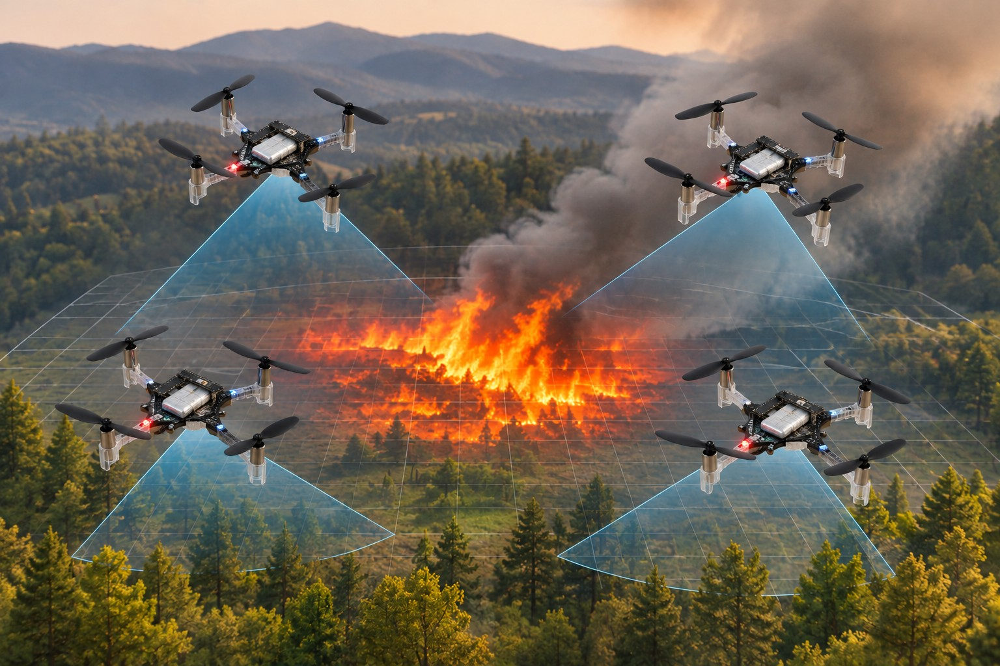
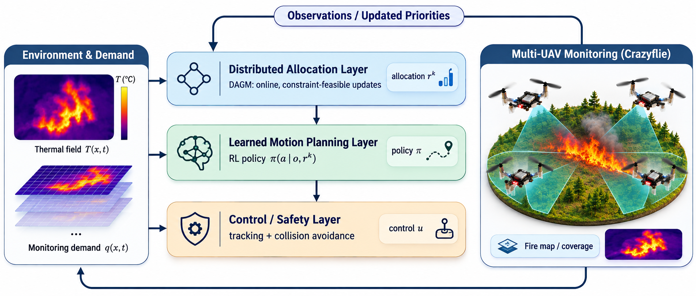
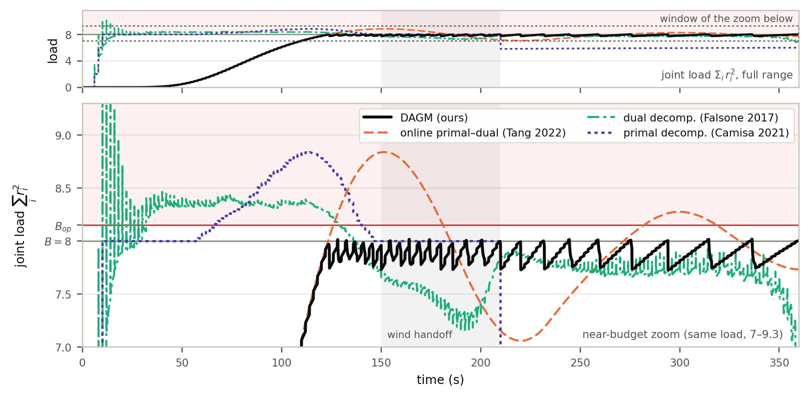
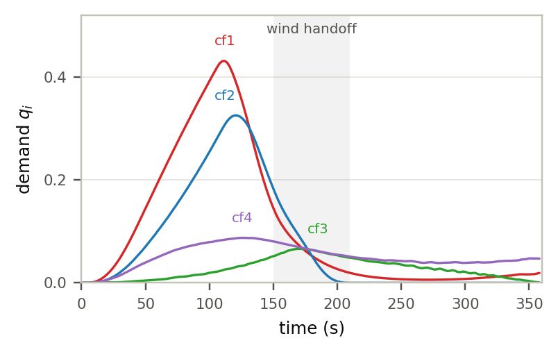
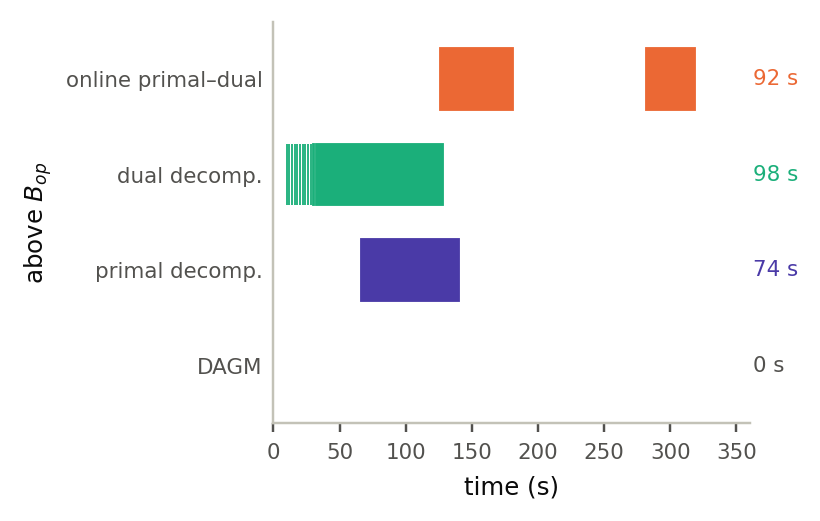
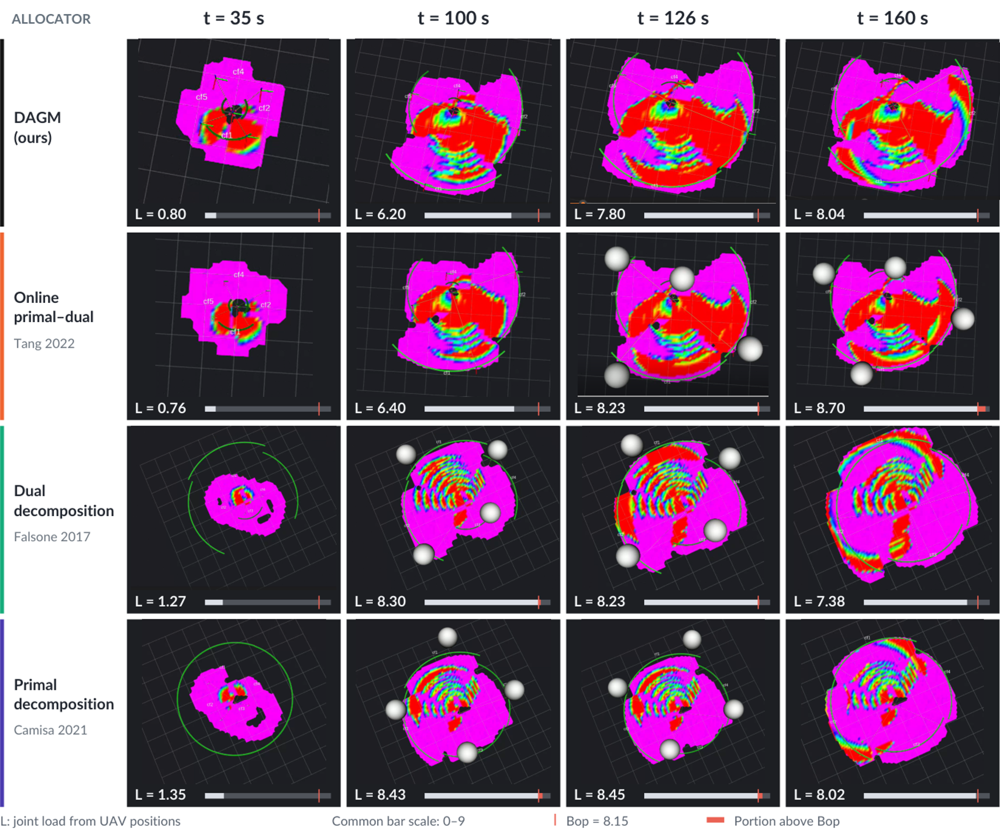

Real-Time Resource Allocation for Learned Multi-UAV Monitoring

Teams of unmanned aerial vehicles (UAVs) offer a powerful tool to continuously monitor unknown environments. The data they collect can be used to construct maps of unknown areas that give human commanders the situational awareness needed for time-critical decisions. For example, the maps can help to select safe escape routes or decide where to redirect robots to search for a lost person. In practice, however, these teams must operate under tight limits on onboard computation and shared communication bandwidth, so where each vehicle flies is inseparable from how scarce resources are divided among them. This project addresses that coupling by formulating multi-UAV path planning as a resource allocation problem, in which resources such as bandwidth are allocated across agents in service of mapping quality. Rather than treating resource allocation, motion planning, and low-level control as separate layers, we integrate them into a single unified framework. Every component is solved within the time constraint set by the fastest dynamics in the system, which in our case is the low-level controller. Under such restrictive constraints, optimal solutions to the resource allocation and motion planning problems cannot be computed in real time. Instead, we seek solutions that are feasible at every time step, with guaranteed bounds on suboptimality. Here, feasibility means preserving communication among the drones and with the central server, which directly determines the quality of the maps. At the core of this framework is a novel resource allocation method that guarantees these constraints are satisfied even as the team adapts to new information. The result is a principled approach to resilient, real-time multi-robot monitoring that can directly support human decision-making in high-stakes missions.
Sense → allocate → plan

Demos
What the allocator buys you
[DRAFT TEXT 3] One moving-fire run, read in three steps: what the fire asks for, how each allocator’s joint load answers against the budget, and how long each spends over the limit. The last figure closes the loop with the learned planner on the real UAVs.




[DRAFT] Authors line goes here once the paper is public.